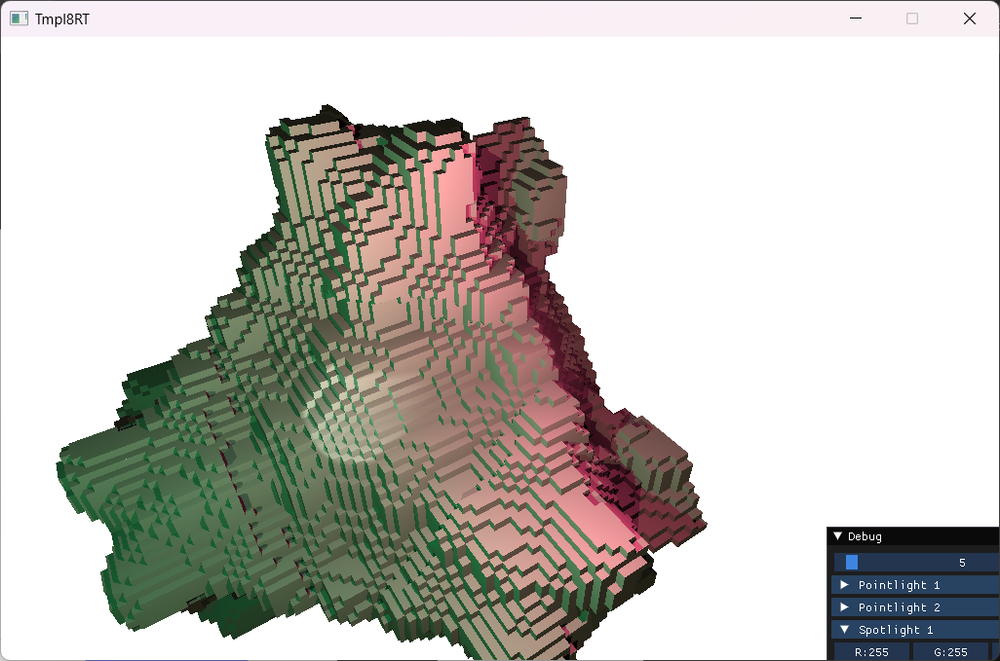
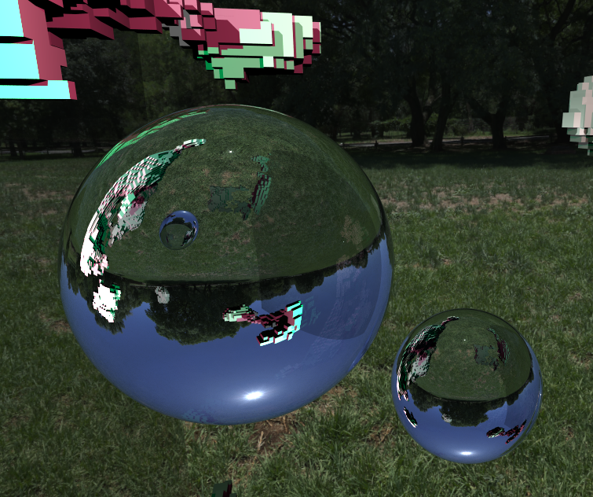
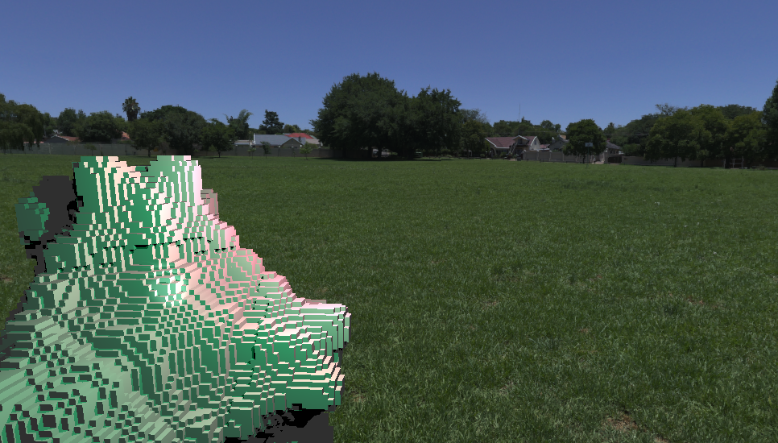

Overview
During an 8-week graphics programming project in my first year at Breda University of Applied Sciences, I built a CPU-based voxel ray tracer in C++. Starting from a basic voxel renderer, I implemented a range of lighting, material, and camera features while learning about light transport, linear algebra, and performance optimization.
The world is generated using Perlin noise and rendered through a DDA (Digital Differential Analyzer) grid traversal algorithm. Rays are traced recursively to support reflections and refractions.
Features
Lighting & Shadows
I implemented three types of lights: point lights, spotlights with adjustable cone size and falloff, and directional lights. All lights cast hard shadows using shadow rays, for each surface point, a ray is traced toward the light source to check for occlusion.

Materials
I built a simple material system supporting diffuse surfaces, mirrors with recursive reflections, and glass using Snell's law for refraction and Schlick's approximation for the Fresnel effect. A recursion cap prevents infinite bounces.


HDR Skydome
Rays that don't hit any geometry sample an HDR environment map, giving the scene a natural-looking sky and providing ambient lighting for reflective surfaces.

What I Learned
This project gave me hands-on experience with recursive ray tracing, light transport and shadow calculations, physically-based material models like Fresnel and Snell's law, and CPU performance profiling. It was a great introduction to graphics programming and the math behind rendering.